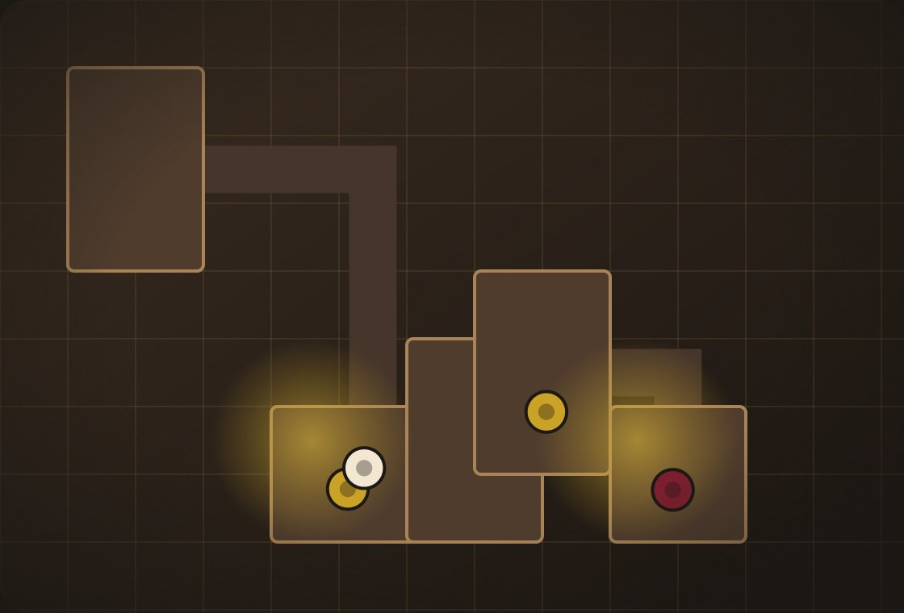

Tudo que a mesa precisa
Dados, mapas, fichas e comunicação integrados na mesma sala. Menos abas abertas, mais tempo de história.
Dados
Role à vista de todos
Chega de confiar no “rolei aqui, deu 18”. Cada rolagem aparece no histórico da sala com o modificador e o resultado.
- d4, d6, d8, d10, d12 e d20
- Modificadores e vantagem/desvantagem
- Histórico visível para toda a mesa


Mapas
Do mapa ao token, sem sair da sala
Suba o mapa da aventura, mova os tokens dos jogadores e revele a masmorra aos poucos, no ritmo da narrativa.
- Upload de mapas e grade ajustável
- Tokens para jogadores e criaturas
- Controle do que cada jogador enxerga
Fichas
Ficha sempre à mão
Jogadores e mestre consultam a ficha dentro da sala, sem alternar com PDFs ou planilhas. Os testes já usam os valores certos.
- Atributos, perícias e vida
- Salvas por personagem
- Integradas à rolagem de dados
Aldric, o Errante
Guerreiro · Nível 5
- FOR16+3
- DES14+2
- CON15+2
- INT10+0
- SAB12+1
- CAR8-1
Pontos de vida32 / 40
- Atletismo +5
- Percepção +3
- Intimidação +2
3 online · Cripta do Rei Cinza
Caio
Vou investigar a porta com cuidado.
20:41
Fernanda Mestre
Vocês ouvem passos atrás da parede.
20:42
Caio rolou d20 · Destreza
17 + 3 = 20 · Sucesso
Chat e chamadas
Conversem como numa mesa de verdade
Voz, vídeo e chat na mesma tela do jogo, com rolagens aparecendo no fluxo da conversa e indicação de quem está online.
- Chamada de voz e vídeo na sala
- Chat com identificação do mestre
- Presença: online, offline e vez do jogador
Monte sua mesa agora
Crie uma sala e teste todos os recursos com seus amigos.